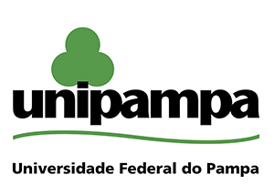
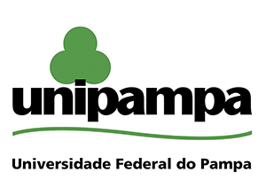

| Eventos Regionais |
|---|
|
17ª Escola Regional de Redes de Computadores. A XVII Escola Regional de Redes de Computadores (ERRC 2019) ocorrerá em Alegrete, RS, no período de 16 a 19 de setembro de 2019, durante a Semana Farroupilha. A ERRC 2019 está sendo organizado pelo Programa de Pós-graduação em Engenharia de Software (PPGES) da Universidade Federal do Pampa (Unipampa), pelo Instituto Federal Farroupilha (IFFar) e pelo Parque Científico e Tecnológico do Pampa (PampaTec), com a colaboração de diversas outras instituições de ensino, pesquisa e extensão. A ERRC é realizada anualmente pela Sociedade Brasileira de Computação (SBC) e acompanha a filosofia de outras escolas realizadas no Estado, como a Escola Regional de Alto Desempenho (ERAD) e a Escola Regional de Banco de Dados (ERBD). Confira aqui o Cartaz do evento. 3ª Escola Regional de Engenharia de Software. A Escola Regional de Engenharia de Software (ERES) é um evento promovido anualmente pela Sociedade Brasileira de Computação (SBC) . A terceira edição do evento, a ERES 2019, ocorrerá em Rio do Sul (SC), região do Alto Vale do Itajaí, no período de 07 a 09 de outubro de 2019, e será organizada conjuntamente pelo Instituto Federal Catarinense (IFC) e pela Universidade do Estado de Santa Catarina (UDESC). O objetivo da ERES é promover e disseminar o conhecimento e boas práticas de Engenharia de Software, tanto do ponto de vista profissional quanto acadêmico. A ERES 2019 é um espaço regional onde são apresentados resultados de pesquisa (graduação e pós-graduação) e relatos de experiência na indústria. O evento oferece um ambiente propício para discussão de abordagens de ensino-aprendizagem em Engenharia de Software nas instituições de ensino superior da região Sul do Brasil, e também para troca de experiências quanto à aplicação de métodos/técnicas de Engenharia de Software nas indústrias desta região. |
| Eventos Nascionais |
|---|
|
I Workshop M&S-SIS. O objetivo do Workshop de Modelagem e Simulação de Sistemas Intensivos em Software (M&S-SIS), além de delinear a comunidade brasileira que trabalha com simulações no contexto de engenharia de software, é oferecer um ambiente para discussão das possíveis sinergias entre o paradigma de modelagem e simulação (M&S) predominante na Engenharia de Sistemas e a Engenharia de Software. Além disso, aborda as pesquisas em Engenharia de Software Dirigida por Modelos, em particular, no que tange aos modelos em tempo de execução. Também aceita trabalhos discutindo como representar fidedignamente software utilizando modelos de simulação de modo a possibilitar que simuladores e interpretadores de modelos executáveis possam tornar-se plataformas de apoio às diversas etapas do processo de desenvolvimento de software. IX Brazilian Symposium on Computing Systems Engineering. The Brazilian Symposium on Computing Systems Engineering (SBESC) is an initiative of the research community originally associated with three events, the Operating Systems Workshop (WSO), Embedded Systems Workshop (WSE) and Real-Time Systems Workshop (WTR), acknowledging the strong synergy between these three areas, and also motivated by the fact that the design of computing systems is an increasingly multidisciplinary task. Since 2013, the Brazilian Conference on Critical Embedded Systems (CBSEC) is also part of SBESC. In order to further strengthen the integration between these communities and to better represent the interdisciplinarity found in many research initiatives, since 2015 SBESC is no longer divided into separated tracks. Instead, a broad list of topics of interest is presented, covering the main aspects of the original SBESC tracks. SBESC 2019 became an IEEE-IES sponsored event. The Brazilian Conference on Software: Theory and Practice (CBSoft) is an annual event promoted by the Brazilian Computer Society (SBC), aiming at promoting and encouraging the exchange of experiences among researchers and practioneers from the industry and academia on the latest research, trends and innovations – practical and theoretical – concerning software. Held since 2010, CBSoft has become one of the most important events of the Brazilian scientific computing community, and each year the numbers of submissions of scientific papers and participants have been increasing. CBSoft 2019 integrates four traditional events organized by the Brazilian software development community: XXXIII Brazilian Symposium on Software Engineering (SBES 2019) XXIII Brazilian Symposium on Programming Languages (SBLP 2019) XIII Brazilian Symposium on Components, Architectures and Software Reuse (SBCARS 2019) IV Brazilian Symposium on Systematic and Automated Software Testing (SAST 2019). |
| Eventos Internacionais |
|---|
|
9th Latin-American Symposium on Dependable Computing. LADC is the major Latin-American event on computer system dependability. The LADC 2019 program will present technical sessions, workshops, tutorials, fast abstracts, keynote talks from international experts in the area and an industrial track. The symposium scope includes recent research results on software and system dependability. LADC is the Latin-American event oriented to disseminate computer system dependability and security research advances. This year, LADC 2019 will be held in conjunction with the IX Brazilian Symposium on Computing Systems Engineering (SBESC) in Natal, Brazil from the 19th to the 21st of November 2019. The LADC symposium scope includes both dependability and security research works, as well as research on the technological challenges that they entail for the design, verification and validation and maintenance of systems, software, and hardware. The ACM/IEEE International Symposium on Empirical Software Engineering and Measurement (ESEM) is the premier conference for presenting research results related to empirical software engineering. ESEM provides a stimulating forum where researchers and practitioners can present and discuss recent research results on a wide range of topics, in addition to exchanging ideas, experiences and challenging problems. The 13th edition of ESEM will be held in Porto de Galinhas, Brazil, from September 16th to 20th, 2019 as part of the Empirical Software Engineering International Week. ER 2019 – 38th International Conference on Conceptual Modeling. The International Conference on Conceptual Modeling (ER) is the leading international forum for presenting and discussing current research on conceptual modeling. The topics of interest span the entire spectrum of conceptual modeling including research and practice in areas such: theories of concepts underlying conceptual modeling, methods and tools for developing and communicating conceptual models, techniques for transforming conceptual models into effective implementations, and the impact of conceptual modeling techniques on databases, business strategies and information systems development. |